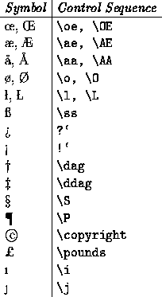

The `active characters'
# $ % & \ ^ _ { } ~
have special purposes within LaTeX. Thus they cannot be produced
in the final document simply by typing them directly. On the
rare occasions when one needs to use the special characters
# $ % & _ { }in the final document, they can be produced by typing the control sequences
\# \$ \% \& \_ \{ \}
respectively. However the characters
\, ^ and ~ cannot be
produced simply by preceding them with a backslash. They can
however be produced using \char92 (in the
\texttt font only),
\char94 and \char126 respectively.
(The decimal numbers 92, 94 and 126 are the ASCII codes of these
characters.)
Other special symbols can be introduced into
text using the appropriate control sequences:
